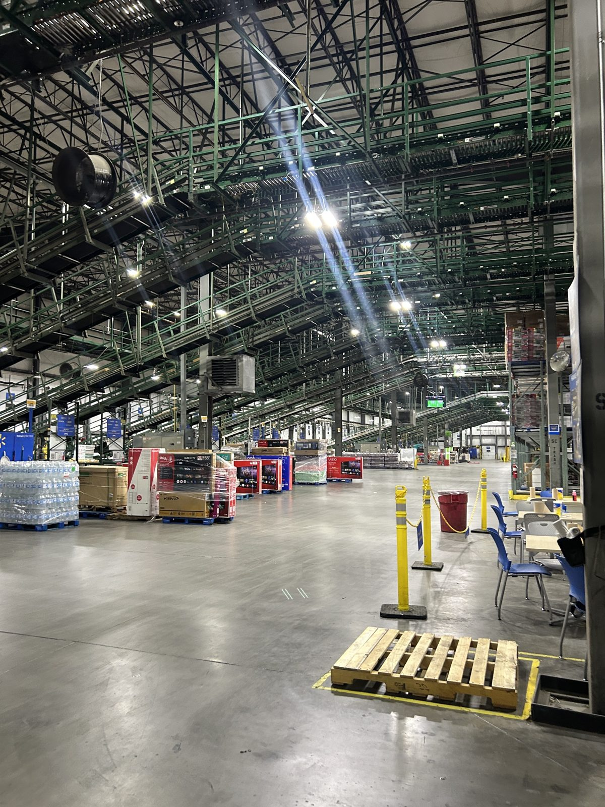
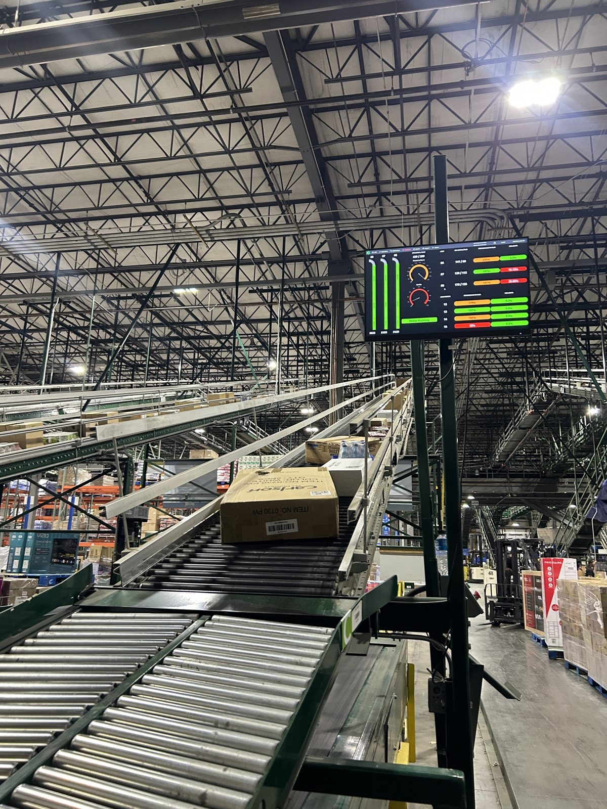
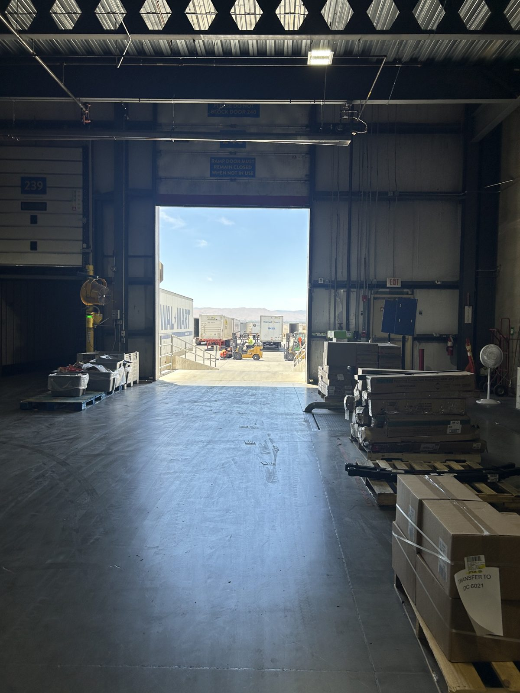
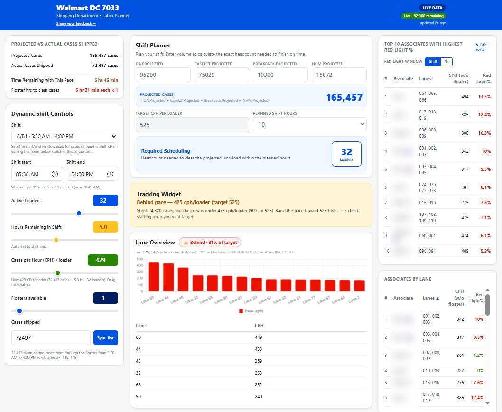
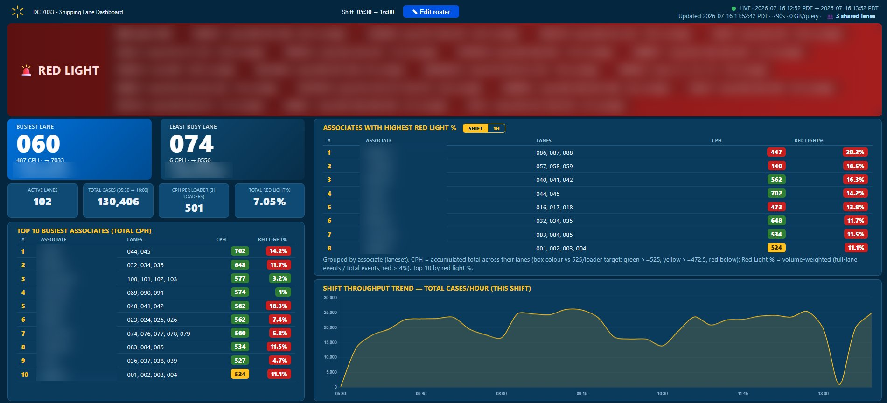

Process Engineer Intern, DC 7033, Apple Valley, CA, Jun to Aug 2026
Shipping is one of the largest areas in the distribution center. Managers had all the data, but no tool to recalculate and redistribute work in real time when something changed mid-shift, like a loader leaving early or volume coming in lower than planned. So they scheduled extra associates as a buffer, and on low-volume days that buffer became direct, unnecessary labor cost.



I used three steady months of shipping data (July to September 2025) as the baseline. The loader line, the share of the 525 cases per hour target that loaders actually hit, ran at 87.3% against a 90% target, and the red light rate (cases stalled because a lane was full or faulty) ran at 5.1% against a target of 4% or less.
Loading the same volume at the target pace would take about 550 fewer labor hours a month, roughly 6,600 hours and $206K a year. Each extra 1% of loader line is worth about $6.4K a month.
Scale runs from 80% to 100%. Savings are projected from Jul to Sep 2025 data.
A fishbone analysis with the shipping managers and ops leads on both shifts traced the inefficient staffing to four groups of causes. Two stood out: the live data existed in Ignition but was spread across 4 to 5 tabs, and there was no single metric that told managers how the shift was going without doing the math by hand.
Working with the shipping managers on both shifts for seven weeks, I built a two-part solution in BigQuery, SQL, Python, and JavaScript. Both tools pull from the same data as Ignition every 90 seconds.
Managers enter the projected volume from each department, and the tool returns exactly how many loaders the shift needs. When something changes, like a loader taking PTO at 2:00 PM, the manager updates it and the tool recalculates how to finish on time with the crew that is left. A tracking widget shows the live pace against target, and a lane chart ranks the busiest lanes in the last hour.

A floor display that works as an early warning system. Any lane set above 4% red light flips into a red banner, so a manager can go help that loader right away. It also shows the busiest and least busy lanes, cases per hour for every loader, and the throughput trend for the shift.

Managers checked 4 to 5 separate places, then walked the lane to see what was happening. To know the day's total, they subtracted one tab's number from another every hour.
Before the tool, I had to create my own spreadsheet just to find the numbers I needed. Shipping manager
One screen for the office and one for the floor. The math is done in the background, and problem lanes flag themselves.
I really like the live feedback loop we were able to have on this tool. It really helps me navigate what to do. Shipping manager
These are projections if the shipping team reaches the 90% loader line target, based on the July to September 2025 baseline. The two tools work together, so the savings are a combined target, not per tool.
| Metric | Baseline | Projected |
|---|---|---|
| Loader line | 87.3% | 90% |
| Cases per hour per loader | 458.3 | 472.5 |
| Red light rate | 5.1% | 4% or less |
| Extra labor hours a year | ~6,600 | 0 |
| Lost labor cost a year | ~$206K | $0 |
Across a 30-person loading crew, the target pace works out to about 426 more cases per hour. I also wrote a work instruction so other engineers can roll the tools out to more buildings.